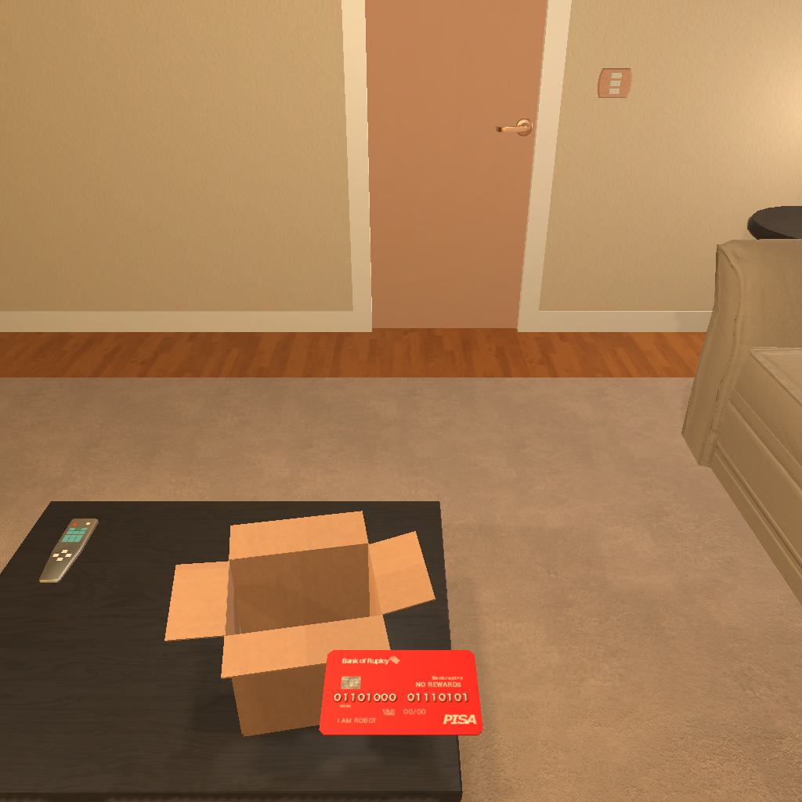
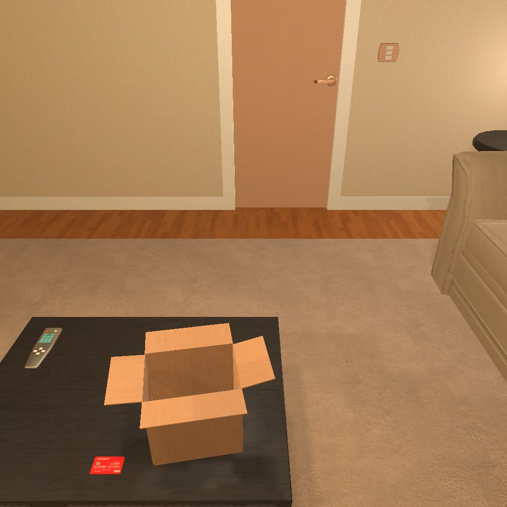

---------------------------------------------------------task: 7---------------------------------------------------------
--------------------------------------------------------------------------------------------------------------------------------------------------------------------
--------------------------------------------------------------------------------------------------------------------------------------------------------------------
Step:--------------------------------------------------------------------------15-------------------------------------------------------------------------------
----------------------------------------
VLM Prompt:
Image1:
Image2:
Image3:
**Instruction**
1. Analyze the provided images to identify all visible household objects and compare the difference between images (e.h. whether the object is opened or not and taken on hand or not), focusing on those relevant to the task description "put a creditcard in coffeetable."
2. Use the analysis of images and the task hint "The agent must find an object of the desired type, pick it up, find the correct location to place it, and put it down there." to answer the question: what is the most reasonable action in the choices for the task description "put a creditcard in coffeetable"?
3. Decide and write the answer using the template: The answer is: (i): , where i is the real number. If there is no desired object in images, search every place based on **Initial Observation** to find the object. And if no one is exactly correct, choose a similar answer.
**Initial Observation**
You are in the middle of a room. Looking quickly around you, you can see armchair (1-2), dresser (1), garbagecan (1), cabinet (1-4), drawer (1-4), coffeetable (1), sidetable (1), sofa (1)
**Answer Choices**
(1): go to armchair 1
(2): go to armchair 2
(3): go to dresser 1
(4): go to garbagecan 1
(5): go to cabinet 1
(6): go to drawer 1
(7): go to drawer 2
(8): go to cabinet 2
(9): go to drawer 3
(10): go to cabinet 3
(11): go to drawer 4
(12): go to cabinet 4
(13): go to sidetable 1
(14): go to sofa 1
(15): put creditcard 2 in/on coffeetable 1
(16): examine creditcard 2
**Answer**
Let's think step by step by following the instructions.
----------------------------------------
----------------------------------------
Original Response:
1. Analyzing the images:
- Image 1 shows a room with a coffeetable and a remote control on it. There is no credit card visible.
- Image 2 shows the same room and coffeetable, but this time there is a credit card placed on the coffeetable.
- Image 3 is the same as Image 2, with no changes in the position of the credit card or any other objects.
2. Based on the task hint, the agent needs to find the credit card, pick it up, and place it on the coffeetable. Comparing the images, we see that the credit card is already placed on the coffeetable in Images 2 and 3.
3. Given that the credit card is already on the coffeetable, the most reasonable action to fulfill the task "put a creditcard in coffeetable" is to leave the credit card as it is since it's already in the correct location.
The answer is: (15): put creditcard 2 in/on coffeetable 1.
----------------------------------------
----------------------------------------
>>> Refine Original VLM Response and Get Pure Action: put creditcard 2 in/on coffeetable 1
----------------------------------------
-----------------------------------------------------------------
Running time: 19.84162926673889 seconds
Total Money: 3.4047700000000014
-----------------------------------------------------------------
-----------------------------------------------------------------
Text Observation:You put the creditcard 2 in/on the coffeetable 1.
-----------------------------------------------------------------
SUCCEED